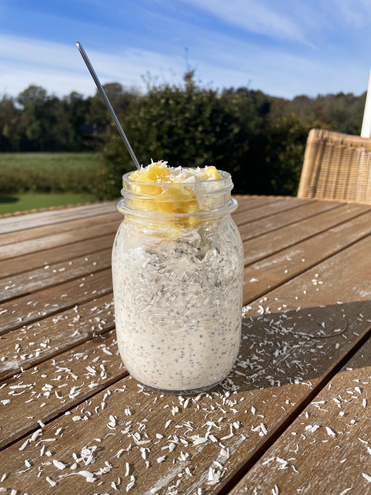

De bedste Overnight Oats til hele ugen
Overnight Oats er nok en af de billigste måder at lave sin morgenmad på.
Samtidigt er det også en af de nemmeste opskrifter at lave mange forskellige variationer af, så man ikke bliver træt af at spise det samme morgenmad hele ugen.
Her kommer mine 3 yndlingsopskrifter på Overnight Oats, som jeg bare ikke kan blive træt af at spise.

1. Pina Colada Overnight Oats:
Ingredienser:
- 2½ dl finvalsede eller grovvalsede havregryn
- 2 spsk chiafrø
- 2 dl kokosmælk
- 1 dl græsk yoghurt
- 2 spsk lys sirup
- 2 tsk vaniljesukker
- 1 nip salt
- 150 g frisk ananas
- evt kokosflager
Trin:
- Bland havregryn, chiafrø, vaniljesukker, salt, yoghurt og kokosmælk i en skål
- Rør det godt sammen, læg låg på og sæt den på køl i minimum 2-3 timer, eller gerne natten over
- Inden serveringen røres grøden sammen med ca. 100 gram ananas skåret i små stykker. Resten toppes på grøden, - evt. sammen med lidt kokosflager, mandler eller lignende
- Er grøden blevet for fast, så rør evt. op med lidt ekstra mælk, yoghurt eller lignende
2. Jordbær Cheesecake Overnight Oats:
Ingredienser:
- 1 dl grovvalsede eller finvalsede havregryn
- 2 spsk chiafrø
- 1-2 tsk lys sirup
- ½ tsk vaniljepasta
- 2 dl mælk
- 3-4 friske jorbær, lidt ekstra til pynt
- 1 dl hytteost
- 1 spsk philadelphia
- Knuste digestive kiks til topping
Trin:
- Tilføj mælk, jordbær, hytteost, flødeost, vanilje og sirup til en blender, og blend indtil det er godt mixet
- Tilføj havregryn, mælkeblandingen og chiafrø til en beholder som fx. et sylteglas, og rør det godt rundt
- Læg beholderen i køleskabet og vent helst natten over, men 3-4 timer kan også slå til
- Når de så er klar morgenen efter, kan det anbefales at røre rundt i det for at finde ud af om det er nødvendigt at tilføje mere mæk for at fortynde det
- Til sidst top med friske jordbær og knuste digestive kiks, og så er den klar til servering

3. Kanelsnegl Overnight Oats:
Ingredienser:
- 1½ dl græsk yoghurt
- 3 dl mælk
- ½ tsk vaniljepasta
- ½ tsk kanel
- et nip salt
- 2 spsk chiafrø
- 2 spsk brun farin
- 2½ dl finvalsede eller grovvalsede havregryn
- 0,5 dl sultana rosiner
Trin:
- Bland alle de våde ingredienser sammen i en stor skål
- Tilføj de resterende ingredienser og mix
- Vælg enten at portionere i beholdere som fx sylteglas, eller put et låg over hele portionen, og stil det i køleskabet natten over
- Top eventuelt med flødeskum, nydes både kold og varm